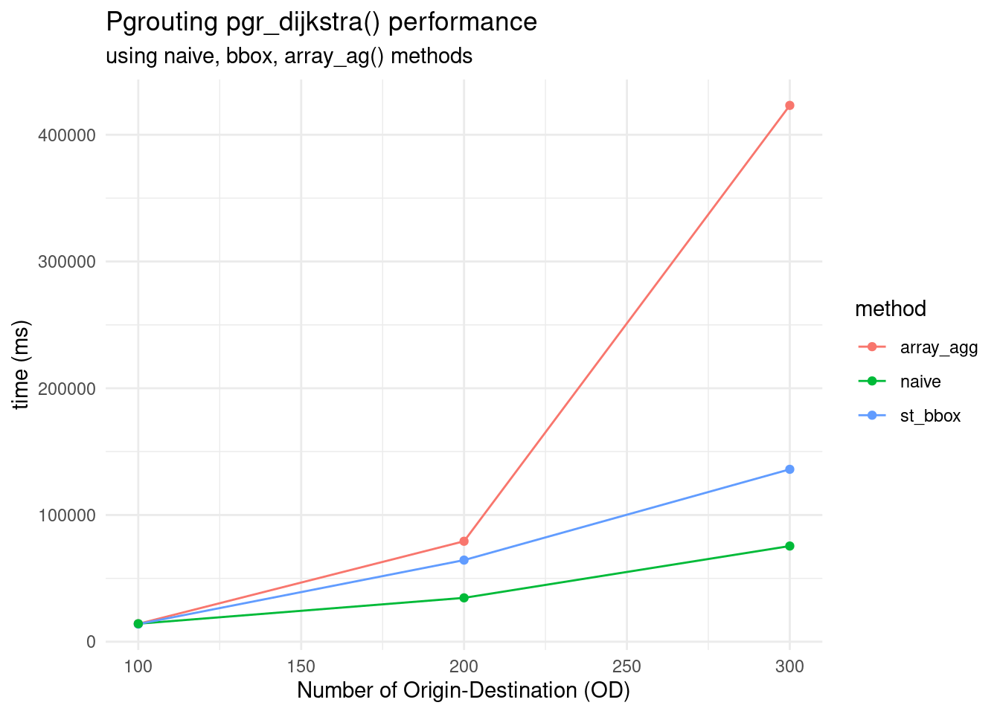
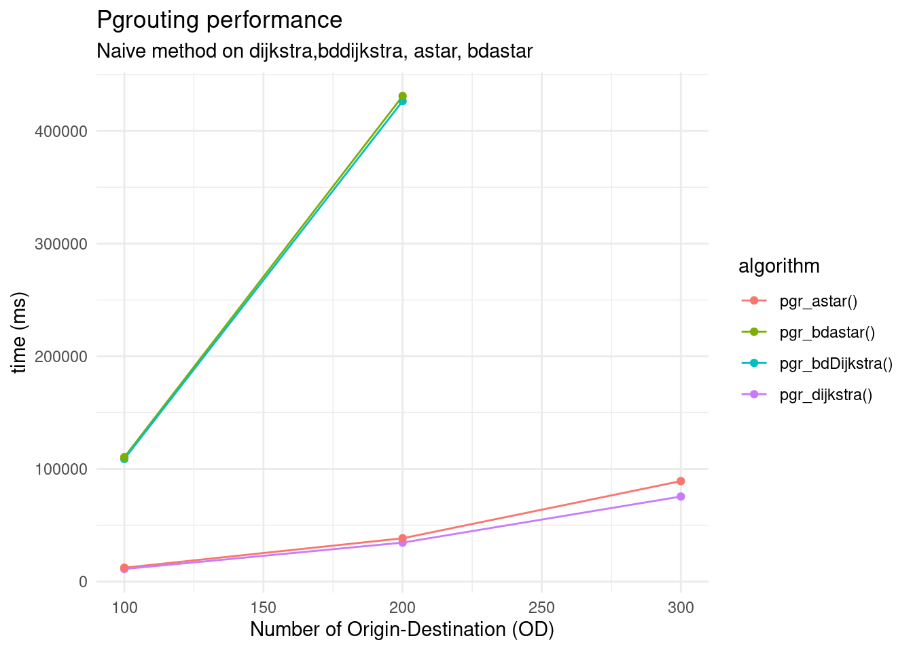

Appendix A — Performance
Poner aqui el problema
A.1 Data
A.1.1 Direct: Download files
A.1.2 Indirect: Build from queries
meter tambien el od_2722 que sin eso no puedes construir
Origin-Destination matrix
Create OD matrix weighted sampling
---- Create 200 origin
CREATE TABLE sampling_weight_200_origin AS
with porto_200_origin AS (
SELECT
*
FROM
od_2728_snapped_origin
ORDER BY random() LIMIT 200)
SELECT * FROM porto_200_origin;
---- Create 200 destination
CREATE TABLE sampling_weight_200_destination AS
with porto_200_destination AS (
SELECT
*
FROM
od_2728_snapped_origin
ORDER BY random() LIMIT 200)
SELECT * FROM porto_200_destination; Creating table with x,y for pgr_astar()
Create network table with x,y for pgr_astar()
CREATE TABLE porto_alegre_net_largest_astar AS
WITH porto_alegre_net_astart AS (
SELECT
*,
st_startpoint(the_geom) AS start_pt,
st_endpoint(the_geom) AS enstart_pt
FROM
porto_alegre_net_largest AS net)
SELECT *,
st_x(start_pt) AS x1,
st_y(start_pt) AS y1,
st_x(end_pt) AS x2,
st_y(end_pt) AS y2
FROM
porto_alegre_net_astart;Applying spatial index
Applying index to weighted OD matrix
---- Create index for origin
CREATE INDEX idx_sampling_weight_200_origin_net_id ON sampling_weight_200_origin USING hash(net_id);
CREATE INDEX idx_sampling_weight_200_origin_geom ON sampling_weight_200_origin USING gist(the_geom);
---- Create index for destination
CREATE INDEX idx_sampling_weight_200_destination_net_id ON sampling_weight_200_destination USING hash(net_id);
CREATE INDEX idx_sampling_weight_200_destination_geom ON sampling_weight_200_destination USING gist(the_geom);
---- Cluster
CLUSTER porto_alegre_net_largest USING idx_porto_alegre_net_largest_geom;
---- Vacuum clean
VACUUM(full, ANALYZE) sampling_weight_200_origin;
VACUUM(full, ANALYZE) sampling_weight_200_destination;
VACUUM(full, ANALYZE) porto_alegre_net_largest;Applying spatial index in the network
CREATE INDEX idx_porto_alegre_net_largest_geom ON porto_alegre_net_largest USING GIST(the_geom);
CREATE INDEX idx_porto_alegre_net_largest_source ON porto_alegre_net_largest USING btree(source);
CREATE INDEX idx_porto_alegre_net_largest_target ON porto_alegre_net_largest USING btree(target);
CREATE INDEX idx_porto_alegre_net_largest_cost ON porto_alegre_net_largest USING btree(cost);
CREATE INDEX idx_porto_alegre_net_largest_bidirectid ON porto_alegre_net_largest USING btree(bidirectid);Create OD matrix regular sampling for agg_array()
---- create origin_destination
CREATE TEMP TABLE vertices_lookup_10
AS
WITH all_pairs AS (
SELECT f.net_id AS fid, f.the_geom AS fgeom,
t.net_id AS tid, t.the_geom AS tgeom
FROM random_10_origin AS f,
random_10_destination AS t
),
vertices AS (
SELECT fid, tid,
(SELECT id
FROM porto_alegre_net_largest_vertices_pgr AS way
ORDER BY way.the_geom <-> fgeom
LIMIT 1) AS fv,
(SELECT id
FROM porto_alegre_net_largest_vertices_pgr AS way
ORDER BY way.the_geom <-> tgeom
LIMIT 1) AS tv
FROM all_pairs
)
SELECT * FROM vertices;
---- Number of OD
SELECT count(*) FROM vertices_lookup_10;Applying index to network for astrar()
---- adding spatial index
CREATE INDEX idx_porto_alegre_net_largest_astar_net_the_geom ON porto_alegre_net_largest_astar USING gist(the_geom);
CREATE INDEX idx_porto_alegre_net_largest_astar_net_start ON porto_alegre_net_largest_astar USING gist(start_pt);
CREATE INDEX idx_porto_alegre_net_largest_astar_net_end ON porto_alegre_net_largest_astar USING gist(end_pt);
CREATE INDEX idx_porto_alegre_net_largest_astar_net_x1 ON porto_alegre_net_largest_astar USING btree(x1);
CREATE INDEX idx_porto_alegre_net_largest_astar_net_y1 ON porto_alegre_net_largest_astar USING btree(y1);
CREATE INDEX idx_porto_alegre_net_largest_astar_net_x2 ON porto_alegre_net_largest_astar USING btree(x2);
CREATE INDEX idx_porto_alegre_net_largest_astar_net_y2 ON porto_alegre_net_largest_astar USING btree(y2); Applying index on vertices_lookup
---- Create index
CREATE INDEX idx_vertices_lookup_10_fid ON vertices_lookup_10 USING hash(fid);
CREATE INDEX idx_vertices_lookup_10_tid ON vertices_lookup_10 USING hash(tid);
CREATE INDEX idx_vertices_lookup_10_fv ON vertices_lookup_10 USING hash(fv);
CREATE INDEX idx_vertices_lookup_10_tv ON vertices_lookup_10 USING hash(tv);
---- Vacuum and clean
VACUUM(full, ANALYZE) vertices_lookup_10;
VACUUM(full, ANALYZE) porto_alegre_net_largest;A.2 Routing
A.3 Method
Show the code
data_dijkstra_method <- read.csv("/home/ricardo/heigit_bookdown/metrics_method_dijkstra.csv",sep=",")
ggplot(data_dijkstra_method, aes(x=number_od, y=time, group = method)) +
labs(x="Number of Origin-Destination (OD)",
y="time (ms)",
title="Pgrouting pgr_dijkstra() performance",
subtitle="using naive, bbox, array_ag() methods") +
geom_line(aes(color=method)) +
geom_point(aes(color=method)) +
theme_minimal()
A.3.1 Naive
Centrality based on
Show the code
--- Run query
EXPLAIN ANALYZE
CREATE TABLE centrality_200_200_porto AS
SELECT b.ogc_fid,
b.the_geom,
count(the_geom) as centrality
FROM pgr_dijkstra('SELECT ogc_fid AS id,
fromid AS source,
toid AS target,
weight AS cost
FROM porto_alegre_net_largest',
ARRAY(SELECT net_id AS start_id FROM porto_200_origin ),
ARRAY(SELECT net_id AS end_id FROM porto_200_destination ),
directed := TRUE) j
LEFT JOIN porto_alegre_net_largest AS b
ON j.edge = b.ogc_fid
GROUP BY b.ogc_fid, b.the_geom
ORDER BY centrality DESC; A.3.2 Method bounding box
Code based on:
Show the code
EXPLAIN ANALYZE
CREATE TABLE centrality_200_200_porto_astrar_bbox AS
SELECT
b.id,
b.the_geom,
count(the_geom) as centrality
FROM
pgr_astar(
'SELECT id,
source,
target,
cost,
x1,
y1,
x2,
y2
FROM
porto_alegre_net_pre_component_one_star
WHERE the_geom && (SELECT box FROM bbox)',
ARRAY(SELECT net_id FROM weight_sampling_200_origin),
ARRAY(SELECT net_id FROM weight_sampling_200_destination),
directed:=TRUE,
heuristic:=2) j
LEFT JOIN
porto_alegre_net_pre_component_one_star AS b
ON
j.edge = b.id
GROUP BY
b.id,
b.the_geom
ORDER BY
centrality DESC; A.3.3 Method array_agg()
Code based on:
Show the code
---- Run query using array_agg()
EXPLAIN ANALYZE
CREATE TABLE porto_100_dijkstra_agg AS
WITH pgr_result AS (
SELECT pgr_dijkstra('SELECT ogc_fid AS id,
fromid AS source,
toid AS target,
weight AS cost FROM porto_alegre_net_largest',
array_agg(fv), array_agg(tv),
directed := true
) FROM vertices_lookup_10
)
SELECT
b.ogc_fid,
b.the_geom,
count(the_geom) as centrality
FROM pgr_result
LEFT JOIN porto_alegre_net_largest AS b
ON (pgr_dijkstra).edge = b.ogc_fid
GROUP BY
the_geom, b.ogc_fid
ORDER BY
centrality DESC;
---- Max centrality value
select max(centrality) FROM porto_100_dijkstra_agg ;
---- Number of rows
select count(*) FROM porto_100_dijkstra_agg ;A.4 Algorithm
A.4.1 pgr_dijkstra
Show the code
data_algorithms_naive <- read.csv("/home/ricardo/heigit_bookdown/metrics_algorithm_naive.csv", sep=",")
ggplot(data_algorithms_naive,aes(x=number_od, y=time, group = algorithm)) +
labs(x="Number of Origin-Destination (OD)",
y="time (ms)",
title="Pgrouting performance",
subtitle="Naive method on dijkstra,bddijkstra, astar, bdastar") +
geom_line(aes(color=algorithm)) +
geom_point(aes(color=algorithm)) +
theme_minimal()
A.4.2 pgr_astrar()
Show the code
EXPLAIN ANALYZE
CREATE TABLE centrality_10_10_porto_astrar AS
SELECT
b.ogc_fid,
b.the_geom,
count(the_geom) as centrality
FROM pgr_astar(
'SELECT ogc_fid AS id,
fromid AS source,
toid AS target,
weight AS cost,
x1,
y1,
x2,
y2
FROM porto_alegre_net_largest_astar',
ARRAY(SELECT net_id FROM random_10_origin),
ARRAY(SELECT net_id FROM random_10_destination),
directed:=TRUE,
heuristic:=2) j
left JOIN porto_alegre_net_largest_astar AS b
ON j.edge = b.ogc_fid
GROUP BY b.ogc_fid, b.the_geom
ORDER BY centrality DESC;
--- check max centrality
SELECT max(centrality) FROM centrality_10_10_porto_astrar ;
--- check max rows
SELECT count(*) FROM centrality_10_10_porto_astrar;A.4.3 pgr_bdijkstra
Show the code
A.4.4 pgr_bdastar()
Show the code
EXPLAIN ANALYZE
CREATE TABLE centrality_100_100_porto_bdastrar AS
SELECT b.ogc_fid,
b.the_geom,
count(the_geom) as centrality
FROM
pgr_bdAstar(
'SELECT
ogc_fid AS id,
fromid AS source,
toid AS target,
weight AS cost,
x1,
y1,
x2,
y2
FROM
porto_alegre_net_largest_astar',
ARRAY(SELECT net_id FROM random_100_origin),
ARRAY(SELECT net_id FROM random_100_destination),
directed:=TRUE,
heuristic:=2) j
LEFT JOIN
porto_alegre_net_largest_astar AS b
ON j.edge = b.ogc_fid
GROUP BY b.ogc_fid, b.the_geom
ORDER BY centrality DESC; A.4.5 Other code
Show the code
CREATE TABLE od_40420_snapped_origin AS
SELECT DISTINCT ON (net.id)
pt.id AS pt_id,
net.id AS net_id,
net.the_geom
FROM
(select *
FROM
od_77763 as pt) as pt
CROSS JOIN
LATERAL (SELECT
*
FROM porto_alegre_net_largest_vertices_pgr AS net
ORDER BY net.the_geom <-> pt.geometry
LIMIT 1) AS net;Show the code
CREATE TABLE random_272_destination AS
with random_272_destination AS (
SELECT
*
FROM
od_40420_snapped_origin
ORDER BY random() LIMIT 200)
SELECT * FROM random_272_destination; Show the code
CREATE TEMP TABLE vertices_lookup_v5
AS
WITH all_pairs AS (
SELECT f.net_id AS fid, f.the_geom as fgeom,
t.net_id AS tid, t.the_geom as tgeom
FROM random_272_origin AS f,
random_272_destination AS t
),
vertices AS (
SELECT fid, tid,
(SELECT id
FROM porto_alegre_net_largest_vertices_pgr AS way
ORDER BY way.the_geom <-> fgeom
LIMIT 1) as fv,
(SELECT id
FROM porto_alegre_net_largest_vertices_pgr AS way
ORDER BY way.the_geom <-> tgeom
LIMIT 1) as tv
FROM all_pairs
)
SELECT * FROM vertices;Show the code
CREATE TABLE porto_272_272_dijkstra AS
WITH pgr_result AS (
SELECT pgr_dijkstra('SELECT id,
source,
target,
cost FROM porto_alegre_net_largest',
array_agg(fv), array_agg(tv),
directed := true
) FROM vertices_lookup_v5
)
SELECT (pgr_dijkstra).*, a.fid, a.tid FROM pgr_result
JOIN vertices_lookup_v5 a
ON (pgr_dijkstra).start_vid = a.fv
AND (pgr_dijkstra).end_vid = a.tv;Show the code
CREATE TEMP TABLE vertices_lookup_v5
AS
WITH all_pairs AS (
SELECT f.net_id AS fid, f.the_geom as fgeom,
t.net_id AS tid, t.the_geom as tgeom
FROM random_272_origin AS f,
random_272_destination AS t
),
vertices AS (
SELECT fid, tid,
(SELECT id
FROM porto_alegre_net_largest_vertices_pgr AS way
ORDER BY way.the_geom <-> fgeom
LIMIT 1) as fv,
(SELECT id
FROM porto_alegre_net_largest_vertices_pgr AS way
ORDER BY way.the_geom <-> tgeom
LIMIT 1) as tv
FROM all_pairs
)
SELECT * FROM vertices;Show the code
CREATE TEMP TABLE vertices_lookup_v5
AS
WITH all_pairs AS (
SELECT f.net_id AS fid, f.the_geom as fgeom,
t.net_id AS tid, t.the_geom as tgeom
FROM random_272_origin AS f,
random_272_destination AS t
),
vertices AS (
SELECT fid, tid,
(SELECT id
FROM porto_alegre_net_largest_vertices_pgr AS way
ORDER BY way.the_geom <-> fgeom
LIMIT 1) as fv,
(SELECT id
FROM porto_alegre_net_largest_vertices_pgr AS way
ORDER BY way.the_geom <-> tgeom
LIMIT 1) as tv
FROM all_pairs
)
SELECT * FROM vertices;